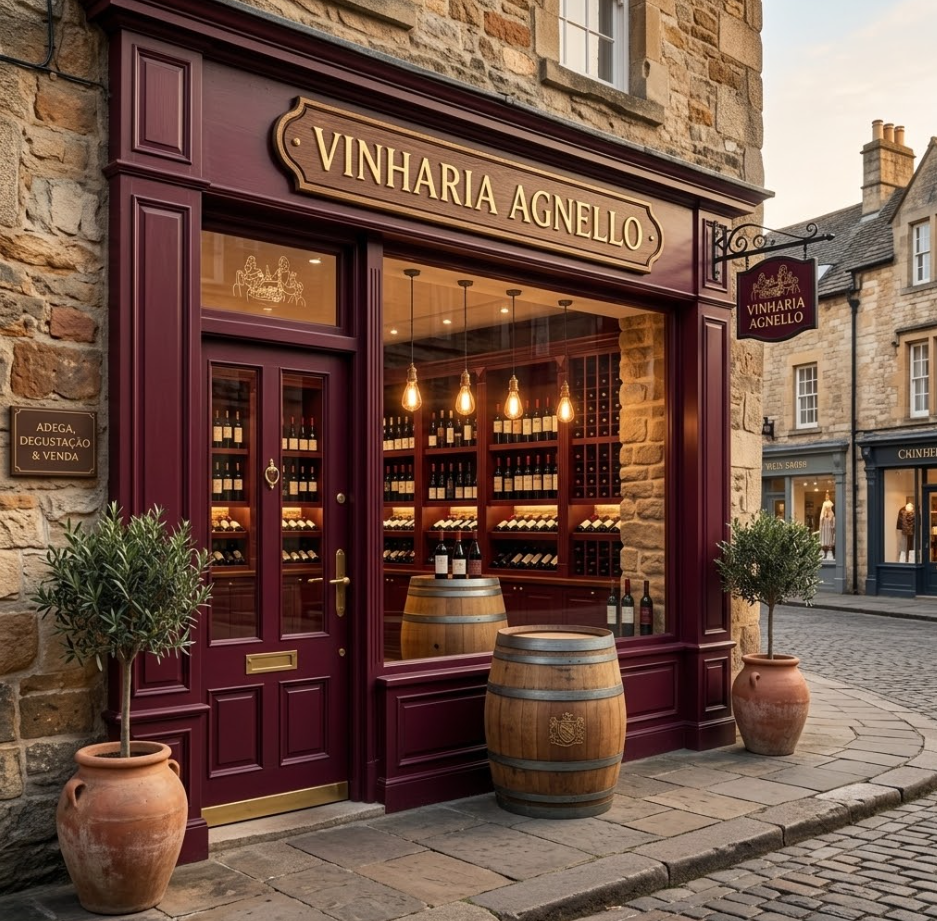

Uma História Escrita ao Redor da Mesa
Mais do que garrafas, cultivamos encontros, conversas sinceras e o prazer de receber bem em São Paulo.
A nossa história começou há mais de 15 anos em São Paulo com um gesto simples: abrir uma garrafa de vinho e puxar uma cadeira para conversar. Foi assim que o Sr. Giulio Agnello abriu as portas da vinheria, acreditando que o vinho existe para aproximar as pessoas, sem afetação ou regras complicadas.
Para o Sr. Giulio, o universo dos vinhos nunca deveria ser intimidador. Quem entra na nossa loja não precisa entender de uvas, safras ou terroirs. O que importa de verdade é o momento: o almoço em família de domingo, a comemoração de uma conquista ou aquele brinde despretensioso no fim de um dia cansativo.
Nosso prazer sempre foi ouvir a sua história primeiro para depois indicar a taça certa. Seja você um curioso dando os primeiros passos ou alguém que já coleciona rótulos na adega, aqui você sempre é recebido com a mesma atenção calorosa e um sorriso no rosto.

“O vinho só ganha sentido quando vira conversa entre amigos. Nossa alegria nunca foi empilhar garrafas, mas fazer parte das boas memórias de quem senta à nossa mesa.”— Bianca Agnello
Levando o Nosso Acolhimento Além das Portas da Loja
Quando a rotina das cidades mudou e as pessoas precisaram ficar em casa, o silêncio na loja doeu no Sr. Giulio. Para ele, acostumado ao aperto de mão na entrada e ao cafezinho servido no balcão, a ideia de vender pela internet parecia distante e impessoal demais. Ele temia que a frieza de uma tela apagasse o calor do nosso atendimento.
Foi então que sua filha, Bianca, entrou na conversa com o carinho de quem cresceu entre as histórias da família. Ela mostrou que a tecnologia não precisava afastar as pessoas, mas sim encurtar distâncias. Se os amigos e clientes não podiam vir até a loja, a Vinheria Agnello iria até a casa deles, mantendo o mesmo cuidado, a consultoria atenta e a dedicação de sempre.
Nossos Quatro Cuidados Diários
Seja no balcão da nossa loja em São Paulo ou conversando conosco pelo site, estes são os compromissos que você sempre vai encontrar por aqui:
-
Conversa de Perto
Nada de termos difíceis ou julgamentos. A gente quer entender o seu gosto e te ajudar a escolher o vinho ideal com leveza e empatia.
-
Garrafas com Alma
Cada rótulo da nossa seleção tem um motivo para estar aqui. Conhecemos as histórias dos produtores e valorizamos o trabalho de quem faz o vinho com paixão.
-
Carinho no Cuidado
Guardamos cada garrafa como se fosse para a nossa própria casa. Controlamos temperatura e luz para que o vinho chegue à sua taça no ápice do sabor.
-
Vinho É para Todos
Acreditamos que o melhor vinho do mundo é aquele que agrada ao seu paladar. Sem regras rígidas, o brinde é livre e feito para ser compartilhado.
15 Anos de Histórias e Brindes
Passo a passo, como a família Agnello construiu sua casa em São Paulo.
-
O Começo
As Primeiras Taças Servidas
O Sr. Giulio abre as portas em São Paulo com poucas prateleiras, mas com um coração enorme e vontade de acolher cada visitante como amigo.
-
Cuidado
Nossa Cave Climatizada
Investimos em adegas especiais para garantir que cada garrafa repouse nas condições ideais de temperatura e tranquilidade.
-
União
Bianca e o Passo Digital
Levamos o atendimento próximo e o carinho da família para a internet, permitindo que amigos de qualquer lugar peçam orientações diretamente a nós.
-
Hoje
Uma Casa Sempre Aberta
Unimos a tradição do nosso balcão à praticidade digital, prontos para celebrar os pequenos e grandes momentos ao seu lado.
A nossa casa também é a sua
Venha tomar uma taça conosco na loja em São Paulo ou mande uma mensagem para a nossa equipe. Vai ser um prazer ajudar você a encontrar o seu próximo vinho favorito.